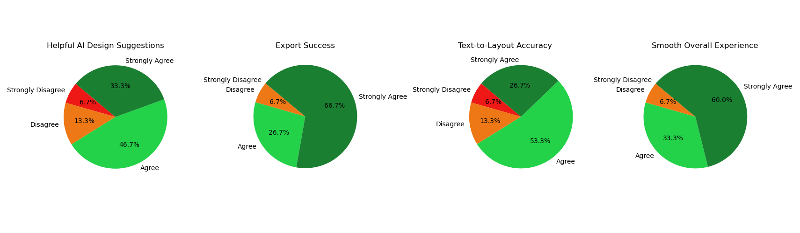

Testing Strategy
Our testing strategy embodies a comprehensive, end-to-end approach that covers every aspect of the project’s AI-driven web page creation pipeline, user interface rendering, and underlying Python OCR service. The primary goal is to validate not only individual features—such as text extraction from screenshots, AI summarization for UI structure, and final layout generation—but also the broader integration points that unite these components into a cohesive user experience.
By adopting a layered methodology, we ensure high accuracy and reliability when creating fully functional web pages from textual descriptions and screenshot references. Each stage of the AI flow is systematically examined, along with key user interface interactions in the CraftJS editor and the performance of the Python services powering OCR and data transfer. This approach guarantees that users experience a smooth, consistent workflow, from providing a prompt or image to receiving a fully rendered, interactive layout.
Testing Scope
The testing scope encompasses all modules and services within the project, ensuring that each segment of the AI flow and user interface is rigorously examined for correctness, reliability, and maintainability. This includes:
- Python OCR (EasyOCR) in the python-ocr folder: Validates text extraction accuracy and performance.
- AI Summaries and Final Layout Generation within the ai directory: Ensures prompt handling, summarization accuracy, and JSON layout conformity with CraftJS requirements.
- Main Web Application and User Interface under webview-ui: Tests React components, sidebars, drag-and-drop CraftJS canvas, and AI chat flows.
- VS Code Extension Wrapper in src: Verifies robust communication between the extension and the front-end modules.
- Export and Packaging Features: Checks HTML/CSS/JS exports, code generation, and user workflows to move finished designs into real-world environments.
Automated and Manual Testing
A structured mix of automated and manual tests ensures that every critical path is covered while also enabling exploratory testing. Automated tests provide repeatable, fast feedback on core functionalities such as Python OCR, AI prompt handling, and UI components. Manual tests focus on usability, design fidelity, and user acceptance by simulating real-world usage. This dual testing approach maintains a robust safety net that yields high confidence in each release.
Compatibility and Hardware Testing
Compatibility and hardware testing ensures that the entire AI-driven page generation workflow operates seamlessly on Windows, macOS, and Linux platforms, across diverse hardware configurations. We confirm Python OCR performance and accuracy on machines with varying CPU and GPU capabilities by running repeated extractions on screenshots of different resolutions and file sizes.
Multiple screen sizes and resolutions are also tested to guarantee correct responsiveness. Peripherals such as touchscreens are validated to confirm drag-and-drop mechanics in the CraftJS canvas. By thoroughly verifying cross-platform stability, the project meets user expectations under all operating conditions.
Unit and Integration Testing
We employ a comprehensive blend of Python unittest and JavaScript/TypeScript testing frameworks to verify both modular correctness and system-wide integrity. This dual-layered approach ensures that each core functionality—ranging from OCR text extraction to the AI-driven summarization—operates reliably on its own and in tandem with the rest of the project’s components.
Python OCR Unit Tests
For OCR-related functionality, we rely on an extensive and carefully designed test suite built with Python’s unittest framework. Each test case within this suite is meant to precisely reflect potential real-world conditions that our OCR pipeline might encounter when converting screenshots into workable text for our AI summarization workflow. By structuring tests around specific, well-defined scenarios, we gain deeper insights into how each step of the process handles both typical and edge-case conditions.
At a high level, our Python OCR unit tests validate five fundamental aspects of the process:
- Preprocessing Efficacy: We check whether applying grayscale, upscaling, or noise reduction steps before running EasyOCR significantly boosts text recognition results. Test images range from crisp, high-resolution screenshots to heavily compressed or low-contrast images, ensuring that preprocessing steps consistently enhance accuracy rather than degrade it.
- Bounding Box Calculation: Each recognized text element returns a set of coordinates representing the bounding box. We validate these against an acceptable size range defined in our test cases. For instance, a small label on a form might require a bounding box area of 40–100 pixels, whereas a larger heading might span hundreds or even thousands of pixels in area. By confirming these ranges, we ensure our system accurately pinpoints textual regions.
- Confidence Thresholding: We measure the average and individual confidence scores from the OCR results to confirm that they meet or exceed minimum thresholds. For example, certain test images mandate a confidence score of at least 0.80 to pass. This assures us that the recognized text is reliable enough to feed into the AI summarization steps without introducing spurious or low-accuracy content.
- Substring Verification: Each test case includes an expected_substring
value. By scanning the full recognized text for that substring, we verify that crucial
details—like an invoice number, a billing label, or a receipt total—appear exactly as
anticipated. For real-world usage, missing or incorrect substrings might lead to user
confusion or broken AI analysis (e.g., a chat prompt about an invoice failing because
the word "Invoice" never got recognized).
- JSON Output Consistency: Once we generate final OCR data, the system
encodes it as a JSON array of recognized text items, each with text,
confidence, and bbox fields. Our tests parse this JSON to ensure
it’s valid and that each data entry includes all required fields. This consistency is
critical for the subsequent steps in the pipeline, where the AI summarization relies on
structured JSON rather than raw, unformatted text.
Our test images are carefully curated to cover diverse scenarios: Receipts often have small, dense text blocks and varied fonts, Billing Forms can include vertical or horizontally aligned text with an array of labels, and Invoices typically feature tables, prominent headings, and sections such as “Invoice #” or “Amount Due.” By systematically running these tests and evaluating the results, we confirm that the OCR handles each situation reliably, alerting us to any regressions or degradations in accuracy as our codebase evolves.
From an architectural perspective, the Python tests also double as a form of contract testing for the AI module that follows. By ensuring the detected text is both accurate and well-structured, the subsequent AI requests (e.g., for UI summarization) can assume that they’re getting clean, precise information. This helps minimize the probability of cascading errors, where flawed OCR output might cause the AI to misunderstand essential labels (like “Username” or “Submit Button”) within the CraftJS-generated layout.
Finally, these Python OCR unit tests are integrated into our continuous integration (CI) workflow. Whenever a developer pushes a change, the entire OCR test suite is automatically triggered, providing immediate feedback if any adjustment—say, introducing a new preprocessing technique—negatively impacts performance or accuracy. This proactive testing stance, combined with the depth of our scenario coverage, ensures that our OCR functionality remains robust and continues to support the broader AI-driven architecture over time.
import unittest
import os
import json
from typing import List, Dict, Any
from ocr_service import minimal_preprocess, run_easyocr
class TestOCRService(unittest.TestCase):
"""
This class checks recognized text, bounding boxes, and confidence values.
"""
def setUp(self):
"""
Establishes a list of test cases with known images and corresponding expectations.
Each element contains:
- img_path: Path to a local image.
- expected_substring: A phrase expected in the recognized text.
- approximate_confidence: A lower threshold to validate confidence.
- bounding_box_range: Approximate bounding box size to confirm detection coords.
"""
self.test_cases: List[Dict[str, Any]] = [
{
"img_path": "tests/data/receipt_sample.png",
"expected_substring": "Total: 15.99",
"approximate_confidence": 0.80,
"bounding_box_range": (50, 1000)
},
{
"img_path": "tests/data/invoice_sample.png",
"expected_substring": "Invoice #1234",
"approximate_confidence": 0.75,
"bounding_box_range": (80, 1200)
},
{
"img_path": "tests/data/billing_form.jpg",
"expected_substring": "Billing Information",
"approximate_confidence": 0.70,
"bounding_box_range": (60, 1500)
}
]
def test_text_extraction(self):
"""
Validates that the recognized text output contains the expected substring
for each sample image. The output text is aggregated into a single string
for a substring check.
"""
for case in self.test_cases:
processed_image = minimal_preprocess(case["img_path"])
ocr_results = run_easyocr(processed_image)
recognized_text = " ".join([item[1] for item in ocr_results])
self.assertIn(case["expected_substring"], recognized_text)
def test_confidence_values(self):
"""
Verifies that recognized text elements maintain an average confidence
above an approximate threshold, using final outputs from run_easyocr.
"""
for case in self.test_cases:
processed_image = minimal_preprocess(case["img_path"])
ocr_results = run_easyocr(processed_image)
confidences = []
for item in ocr_results:
if len(item) >= 3:
confidences.append(float(item[2]))
avg_conf = sum(confidences) / max(len(confidences), 1)
self.assertGreaterEqual(
avg_conf,
case["approximate_confidence"],
msg=f"Average confidence is {avg_conf}, lower than expected."
)
def test_bounding_boxes(self):
"""
Confirms that bounding boxes for recognized text fall within a
reasonable range, ensuring coordinate extraction is consistent.
"""
for case in self.test_cases:
processed_image = minimal_preprocess(case["img_path"])
ocr_results = run_easyocr(processed_image)
min_box_size, max_box_size = case["bounding_box_range"]
for item in ocr_results:
coords = item[0]
xs = [pt[0] for pt in coords]
ys = [pt[1] for pt in coords]
width = max(xs) - min(xs)
height = max(ys) - min(ys)
box_area = width * height
self.assertGreaterEqual(
box_area,
min_box_size,
msg=f"Box area of {box_area} is below {min_box_size}."
)
self.assertLessEqual(
box_area,
max_box_size,
msg=f"Box area of {box_area} is above {max_box_size}."
)
def test_output_structure(self):
"""
Checks that the final JSON structure is well-formed and includes
'text', 'confidence', and 'bbox' fields for each recognized item.
"""
for case in self.test_cases:
processed_image = minimal_preprocess(case["img_path"])
results = run_easyocr(processed_image)
output_data = []
for result in results:
coords = result[0]
text_val = result[1]
conf_val = result[2] if len(result) >= 3 else 1.0
xs = [pt[0] for pt in coords]
ys = [pt[1] for pt in coords]
min_x, max_x = int(min(xs)), int(max(xs))
min_y, max_y = int(min(ys)), int(max(ys))
data_entry = {
"text": text_val,
"confidence": float(conf_val),
"bbox": [min_x, min_y, max_x, max_y]
}
output_data.append(data_entry)
json_str = json.dumps(output_data, ensure_ascii=False)
parsed = json.loads(json_str)
self.assertIsInstance(parsed, list)
for item in parsed:
self.assertIn("text", item)
self.assertIn("confidence", item)
self.assertIn("bbox", item)
self.assertIsInstance(item["bbox"], list)
if __name__ == '__main__':
unittest.main()
Integration with AI Summaries
Our Python OCR tests serve as the first critical step in an integrated pipeline that continues with AI-driven summarization. Whenever a screenshot is processed, each recognized text fragment—along with its corresponding confidence score and bounding box—feeds directly into our AI summarization routines. This sequence is particularly important when the AI is attempting to group and interpret distinct UI elements, such as buttons, labels, or form fields.
If the OCR data is inaccurate or misaligned, the summarization model may incorrectly classify certain parts of the interface, leading to poorly structured CraftJS layouts. For instance, an incorrectly recognized label (e.g., “Submiit” instead of “Submit”) might prompt the AI to overlook important functions or produce an illogical element hierarchy. Similarly, a mismatch in bounding boxes can cause the AI to merge distinct text blocks into a single item, producing misleading or broken interface components. Therefore, accurate, well-tested OCR output substantially reduces error propagation and ensures our summarization steps yield meaningful UI/GUI outlines.
We also validate the interplay between OCR accuracy and AI text grouping. Common real-world scenarios include receipts with itemized lists, form pages with overlapping fields, or dense landing pages featuring multiple navigation bars. By testing OCR performance on these complex visuals and then measuring how accurately the AI organizes them (into nav bars, headers, or content blocks), we confirm that the entire end-to-end pipeline remains robust. Our Python unit tests, in turn, give us confidence that any anomalies in AI output stem from legitimate modeling complexities rather than faulty input data.
TypeScript Integration and Performance Tests
On the JavaScript/TypeScript side, we perform comprehensive integration checks that monitor the data flow from OCR (Python) all the way to the AI summarization logic and final layout rendering. These tests verify that large or partially accurate recognized text is still handled gracefully by the AI. For instance, even if some tokens are unrecognized or truncated, our summarization prompts and fallback logic should interpret the remaining text in a robust manner, maintaining essential structure and labeling within the resulting CraftJS blueprint.
We also account for concurrency and real-time feedback. Multiple AI requests (e.g., repeated summarizations after small user edits) must not degrade system performance to an unacceptable level. The TypeScript integration tests simulate situations where the user uploads multiple screenshots of varying sizes—like a straightforward login form followed by a large, image-heavy landing page—in quick succession. We measure processing speeds and monitor memory usage to ensure our solution scales without crashing or causing severe slowdowns. Concurrency checks also focus on verifying that partial outputs from the OCR service do not lock the AI summarization routines.
Regarding performance, we maintain detailed logging of every stage: from the start of OCR processing to the final generation of a CraftJS layout. This data is aggregated in test reports, allowing us to pinpoint bottlenecks or regressions when the codebase evolves. For example, if the OCR step suddenly spikes from 20 seconds to 60 seconds for a moderately complex screenshot, we receive an immediate alert through our continuous integration pipeline. We can then trace that spike to a specific commit or configuration change (e.g., a newly introduced preprocessing step) and address it before it affects user-facing builds.
The TypeScript tests also perform content validation on AI outputs beyond mere timing. We inspect the textual summaries (both UI and GUI) to confirm they include vital elements, such as “Submit Button” or “Navigation Bar,” and do not produce contradictory or impossible layout structures. By combining these content checks with timing metrics, our integration suite ensures both correctness and efficiency in real-world usage scenarios. The following snippet (aiOcrPerformance.integration.test.ts) demonstrates how we track and log these performance benchmarks, making them an essential part of regression detection and capacity planning.
/**
* @file aiOcrPerformance.integration.test.ts
*
* Measures how long OCR and subsequent AI summarization take for images
* of varying complexity in the Blueprint AI Project.
* It logs or asserts runtimes to track performance trends.
*/
import path from 'path';
import fs from 'fs';
import { performance } from 'perf_hooks';
import { runPythonOcr } from '../../src/ai/pythonBridge';
import { getUiSummary, getGuiSummary } from '../../src/ai/blueprintAiClient';
describe('AI + OCR Performance Integration Tests', () => {
interface TestImageCase {
name: string;
filename: string;
complexityLevel: string;
}
const testImages: TestImageCase[] = [
{ name: 'Very Simple', filename: 'very-simple.png', complexityLevel: 'very-simple' },
{ name: 'Simple', filename: 'simple.png', complexityLevel: 'simple' },
{ name: 'Moderate', filename: 'moderate.png', complexityLevel: 'moderate' },
{ name: 'Complex', filename: 'complex.png', complexityLevel: 'complex' },
{ name: 'Dense', filename: 'dense.png', complexityLevel: 'dense' },
{ name: 'Extremely Dense', filename: 'extremely-dense.png', complexityLevel: 'extremely-dense' },
];
const FAKE_OPENAI_KEY = 'sk-xxxxxxx-FAKE-TEST-KEY';
testImages.forEach((testCase) => {
it(\`should measure OCR and AI time for image: \${testCase.name}\`, async () => {
const imagePath = path.resolve(__dirname, '..', 'data', testCase.filename);
if (!fs.existsSync(imagePath)) {
throw new Error(\`Test image not found at path: \${imagePath}\`);
}
const rawImageBuffer = fs.readFileSync(imagePath);
// Measure OCR time
const ocrStart = performance.now();
const ocrResult = await runPythonOcr(rawImageBuffer);
const ocrEnd = performance.now();
const ocrTimeMs = ocrEnd - ocrStart;
// Build recognized text
const recognizedText = ocrResult.map((item: any) => item.text).join('\\n');
// Measure UI summary time
const uiStart = performance.now();
const uiSummary = await getUiSummary({
text: recognizedText,
screenshot: rawImageBuffer,
openAiKey: FAKE_OPENAI_KEY,
});
const uiEnd = performance.now();
const uiTimeMs = uiEnd - uiStart;
// Measure GUI summary time
const guiStart = performance.now();
const guiSummary = await getGuiSummary({
screenshot: rawImageBuffer,
openAiKey: FAKE_OPENAI_KEY,
});
const guiEnd = performance.now();
const guiTimeMs = guiEnd - guiStart;
// Log results
console.log(
\`[\${testCase.complexityLevel.toUpperCase()}] OCR Time: \${(ocrTimeMs / 1000).toFixed(2)}s,\` +
\` UI AI Time: \${(uiTimeMs / 1000).toFixed(2)}s,\` +
\` GUI AI Time: \${(guiTimeMs / 1000).toFixed(2)}s\`
);
// Basic performance assertions
expect(ocrTimeMs).toBeLessThan(120000);
expect(uiTimeMs).toBeLessThan(180000);
expect(guiTimeMs).toBeLessThan(180000);
// Verify the AI summaries are not empty
expect(uiSummary).toBeTruthy();
expect(guiSummary).toBeTruthy();
});
});
});
Continuous Integration and Future Expansion
All tests run automatically via our continuous integration (CI) pipeline whenever new code is pushed to the repository. This guarantees that OCR, AI summarization, and final layout rendering remain stable with each commit. Additional tests can be introduced to target newly discovered edge cases or extended modules, ensuring that coverage scales alongside new features like multi-page generation, more advanced design transformations, and refined AI prompts.
Relevance to the Overall Project
By thoroughly testing each core function—OCR accuracy, bounding box validations, confidence thresholds, AI handling of recognized text, and layout generation logic—we uphold the end-to-end reliability of the entire AI-driven workflow. These rigorous checks reduce the risk of regressions and user-facing errors, ensuring that both the First Page Creator and the Main Interface consistently deliver the expected user experience.
Compatibility Testing
We run exhaustive compatibility checks across Windows, macOS, and Linux. Our tests include verifying the VS Code extension’s performance, ensuring the Python OCR scripts run consistently, and validating that the webview UI renders and behaves properly in embedded frames or native browsers on each platform. This helps guarantee that both the AI-driven page creation process and the CraftJS editor flow remain stable and visually consistent, regardless of operating system specifics.
Machines with varied CPU/GPU configurations are used to confirm that image processing, memory usage, and text extraction remain stable over a wide range of hardware. We ensure that users on both resource-constrained setups (e.g., older laptops) and high-performance workstations (with advanced graphics capabilities) can run the application without encountering crashes or major slowdowns. This involves validating that the Python OCR service does not exceed memory limits and that the AI summarization pipeline remains responsive, even under heavier loads.
Platform Range
Our testing environment covers multiple distributions of Linux (Ubuntu, Fedora), multiple macOS versions, and Windows 10/11. On each platform, we install the VS Code extension locally and verify:
- Extension activation, including correct loading of Python-based OCR components.
- Proper initialization of the webview UI, ensuring React components and styling load without error.
- Full functionality of AI-driven layout generation, from uploading images to rendering the final CraftJS layout.
VS Code Extension Integrations
We confirm that the extension maintains reliable communication between the front-end React interface and the back-end Python OCR services. Cross-version checks of VS Code itself are included to ensure that no compatibility issues arise from varying API levels.
GPU/CPU Variations
Python OCR (EasyOCR) benefits from GPU acceleration in some cases, so we validate both GPU-enabled and CPU-only usage. Test scenarios confirm that text extraction and bounding box predictions remain accurate without sacrificing performance, regardless of whether the underlying hardware is a high-end GPU or a basic integrated graphics chip.
Responsive Design Testing
Our application is tested on multiple screen sizes—ranging from high-resolution displays to more modest laptops—to ensure that UI elements, sidebars, and the draggable canvas remain usable and visually clear at any scale. Touchscreen devices also receive focused testing to confirm that drag-and-drop operations function as expected. This is crucial for maintaining a smooth user experience across desktops, tablets, and convertible laptops.
Breakpoints and Screen Resolutions
We test standard breakpoints (e.g., 1280px, 1024px, 768px, 480px) to confirm that components auto-adjust their layouts accordingly. The CraftJS canvas accommodates these breakpoints by scaling appropriately, ensuring that no overlapping or hidden interface elements appear at smaller resolutions.
Touchscreen and Pointer Interactions
We verify that dragging, resizing, and rotating elements in the CraftJS canvas are smooth when using touch gestures. Similarly, pointer-based interactions (e.g., trackpads, styluses) also undergo tests to confirm consistent behavior. During these tests, we pay particular attention to any potential delays or missed events, ensuring that the user experience remains intuitive.
We also combine real-world device checks with browser developer tools for testing responsiveness. Every major element—such as component sidebars, property panels, and advanced editing features—undergoes repeated iteration to confirm fluid adaptation to different display widths and orientations.
Performance/Stress Testing
To verify scalability and robust handling of real-world scenarios, we subject the application to varying image complexities (e.g., “Very Simple” to “Extremely Dense”) and different user prompts. Below are visual summaries of OCR confidence, character error rates, AI processing times, and overall accuracy. These metrics illustrate how our upscaling/grayscale preprocessing and AI summarization adapt to diverse workloads.
OCR Confidence and Accuracy
The Upscale + Grayscale method demonstrates the highest confidence levels (ranging from about 0.88 to 0.95 across different test images). Grayscale Only remains moderately strong but can dip under 0.8 for complex images, while No Preprocessing often produces the lowest confidence (around 0.55 to 0.65) for items like MobileUI or ProductLabel that contain small or stylized text.
Similarly, the accuracy chart underscores that Upscale + Grayscale yields the most consistent text recognition results, especially for screenshots containing multiple form fields (e.g., BillingForm) and heavily segmented layouts (MobileUI). No Preprocessing trails behind significantly, indicating that some image adjustments are vital for better OCR performance.
Character Error Rates (CER)
Character error rate measurements illustrate where certain methods excel. Upscale + Grayscale consistently keeps CER below 10%, even for complex text segments, while No Preprocessing can climb above 30% in some cases. This gap is especially evident when analyzing small receipt text or intricate UI labels.
AI Processing Time vs Image Complexity
As image complexity increases, both OCR and CraftJS output times rise proportionally. Simple images (e.g., a basic login page) complete OCR in approximately 19 seconds and CraftJS output in around 18 seconds, while extremely dense images (e.g., large multi-section forms or lengthy product labels) can push OCR to about 230 seconds and CraftJS output to 343 seconds. This predictable scaling allows us to benchmark improvements in the future and optimize our AI pipeline for increasingly dense screenshots.
Overall Observations
Our stress tests confirm that specialized preprocessing (upscaling, grayscaling, and careful cleanup) significantly boosts OCR reliability. This, in turn, feeds more accurate textual data into the AI summarization layers, ensuring that the final CraftJS layouts reflect the correct information. Meanwhile, the increased processing time for extremely dense images remains a key area for future optimization, particularly in concurrency or real-time user feedback scenarios.
In summary, from straightforward login pages to complex multi-section invoices, the system demonstrates strong resilience and accuracy. Our combination of advanced image preprocessing, structured AI summarization prompts, and performance-oriented architecture enables rapid, high-quality page generation under a variety of test conditions.
User Acceptance Testing (UAT)
User Acceptance Testing (UAT) was conducted to ensure that BlueprintAI meets functional requirements and delivers a smooth experience for developers and designers. Testing focused on usability, performance, and the effectiveness of AI-generated UI components.
Testers
-
Tester 1 – 22-year-old Computer Science student
Tester 2 – 28-year-old UX Designer
Tester 3 – 35-year-old Frontend Developer
Tester 4 – 41-year-old Project Manager
These testers were selected to represent our key user groups, including students, designers, developers, and project managers. Their identities have been anonymised for privacy.
Test Cases
-
Test Case 1: Screenshot-to-Layout Generation
We asked the user to upload a screenshot of a webpage and generate a structured layout using AI.
Test Case 2: Text-to-Layout Generation
We asked the user to describe a webpage in natural language and observe how well the AI-generated layout matched their description.
Test Case 3: Drag-and-Drop Customisation
Users were instructed to edit and arrange UI components using the drag-and-drop editor.
Test Case 4: AI-Driven Component Suggestions
Users selected a UI element and requested AI-generated design suggestions for enhancements.
Test Case 5: Export Functionality (HTML, CSS, JavaScript)
Users were asked to export their projects as HTML, CSS, and JavaScript files and verify the quality of the generated code.
Feedback from Users
| Acceptance Requirement | Strongly Disagree | Disagree | Agree | Strongly Agree | Comments |
|---|---|---|---|---|---|
| Was the UI navigation easy? | 0 | 0 | 1 | 3 | + Clean and simple interface |
| Was the AI-generated layout accurate? | 0 | 1 | 2 | 1 | - Struggled with complex layouts, but overall useful. |
| Could you easily drag and drop components? | 0 | 0 | 2 | 2 | + Alignment guides helped improve usability |
| Were AI design suggestions helpful? | 0 | 1 | 2 | 1 | - Suggestions were useful, but customization options could be expanded |
| Could you successfully export your project? | 0 | 0 | 1 | 3 | + Exported code was well-structured and easy to use in VSCode. |
| Was the AI-generated text-to-layout accurate? | 0 | 1 | 2 | 1 | - Simple layouts worked well, but needed refinement for complex designs. |
| Was the experience smooth overall? | 0 | 0 | 1 | 3 | + Intuitive, but some minor bugs when handling large projects |
Based on the above criteria, we also asked a broader group of 15 peers to test out our product. The 4 main criteria produced the below results.
Peer Feedback
Conclusion
The user feedback was overwhelmingly positive, indicating that BlueprintAI successfully provides an accessible and efficient AI-powered UI design experience. Users appreciated the drag-and-drop customisation, AI-generated layouts, and export functionality while also identifying areas for improvement, such as better handling of complex designs and more customisation options for AI suggestions.